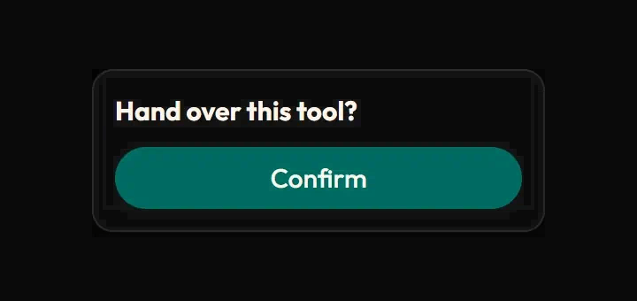
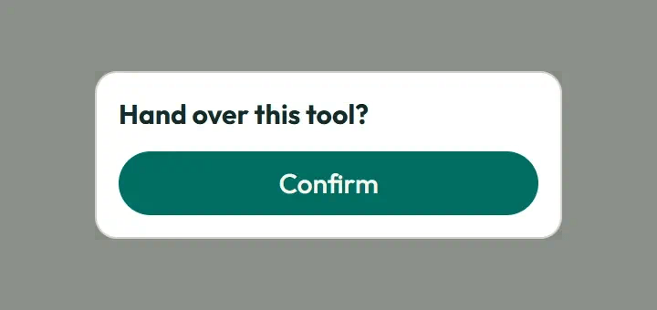
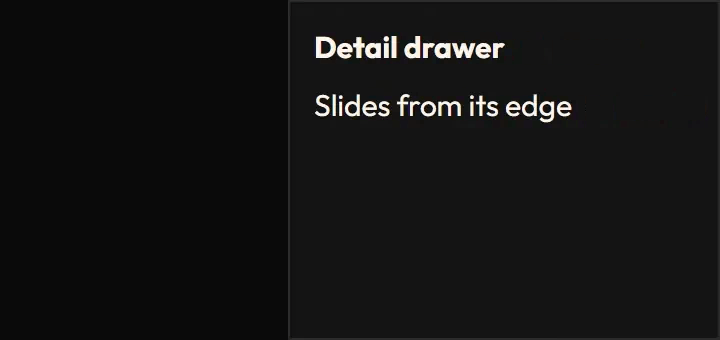
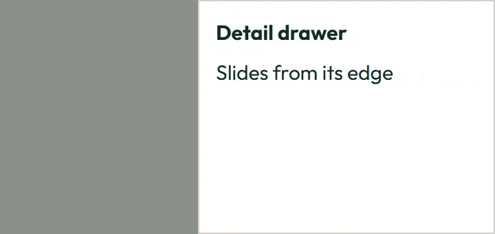
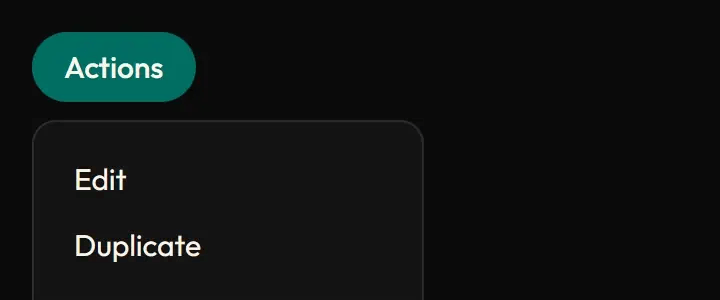
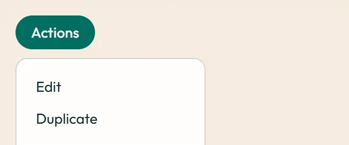

Overlays
Open a layer, then another: the open one leaves first (its exit plays), so only one layer is ever on screen. Escape, a click on the scrim or the Close button closes it and focus returns to the control that opened it. Tab stays inside a dialog, sheet or drawer. Under prefers-reduced-motion: reduce the layers appear and disappear instantly, with the same end states.
No layer open.
Hand over this tool?
The scrim fades in and the dialog pops from just in front (scale 0.98, 4 px).
Filter requests
On phones the dialog becomes a bottom sheet: it docks to the bottom edge and rises instead of scaling.
Content scrolls inside while the header and footer stay put.
Image previews
Static posters are shown first. Play starts an animated image; Pause restores its poster. Reduced motion keeps posters visible.





